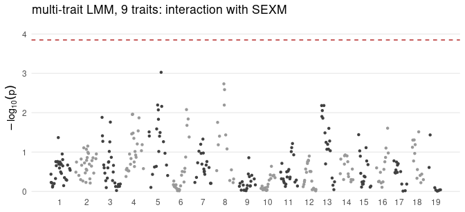
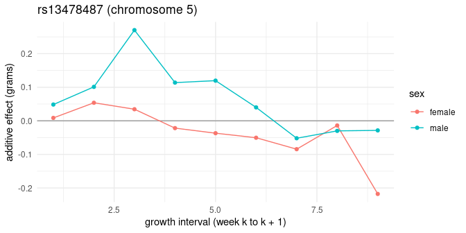

Genotype-by-environment scans: loci acting differently in each sex
Source:vignettes/indri-gxe.Rmd
indri-gxe.RmdDo loci affect growth differently in males and females? This vignette treats sex as the environment: it estimates the genetic covariance of growth within and between the sexes, and scans for genotype-by-sex interactions with two backgrounds. It builds on the vignettes Estimating G for many traits and Genome scans for many traits, and was precomputed.
Two features here are experimental.
fit_G_env() estimates the genetic covariance between
environments, and in simulations it still estimates cross-environment
genetic correlations somewhat low (about 0.85 where the truth is 1;
about right where it is 0.5). Scans that use it are mildly conservative
for interactions: they do not report too many interactions, but they
miss a few.
Setup
# The data every vignette uses: the nine weekly weight gains of the LG/SM F3
# mice, with the fixed effects of the original analyses.
library(indri)
traits <- lgsm_traits$growth
d <- lgsm_f3[lgsm_f3$ID %in% rownames(lgsm_genotypes$A), ]
d <- d[stats::complete.cases(d[c(traits, "LSB", "LSW")]), ]
Y <- as.matrix(d[traits])
rownames(Y) <- d$ID
X <- stats::model.matrix(~ SEX + factor(COHORT) + LSB + LSW, d)
rownames(X) <- d$ID
A <- lgsm_A[rownames(Y), rownames(Y)]
dosage <- lgsm_genotypes$A[rownames(Y), ] + 1
info <- transform(lgsm_markers, pos = cM)
cores <- as.integer(Sys.getenv("INDRI_VIGNETTE_CORES", "2"))
dir.create("cache", showWarnings = FALSE)
fit <- if (file.exists("cache/fit_sommer.rds")) readRDS("cache/fit_sommer.rds") else
fit_G(Y, X = X, A = A, engine = "sommer", cores = cores, seed = 1L,
progress = FALSE)
table(d$SEX)
#>
#> F M
#> 739 809
table(tapply(d$SEX, d$FAMILY, function(s) length(unique(s))))
#>
#> 1 2
#> 8 187Almost every family has mice of both sexes: relatives of different sex are what make the genetic covariance between the sexes estimable.
Genetic covariance within and between the sexes
fit_G_env() treats each trait in each sex as its own
trait (a “character state”): growth12:F is observed in
females, growth12:M in males. Its G holds the
genetic covariance within each sex and between the sexes. The
environment’s main effect is in the states’ own means, so the sex column
of X is left out:
X_env <- X[, colnames(X) != "SEXM"]
fit_env <- fit_G_env(Y, env = d$SEX, X = X_env, A = A, cores = cores,
seed = 1L, progress = FALSE)
fit_env
#> indri environment-specific G (experimental): 9 traits in 2 environments ( F, M )
#> genetic correlation of each trait between environments:
#> F-M
#> growth12 0.951
#> growth23 0.973
#> growth34 0.522
#> growth45 0.905
#> growth56 0.499
#> growth67 0.797
#> growth78 0.371
#> growth89 0.610
#> growth910 0.584Like fit_G(), fit_G_env() fits many small
blocks and assembles them, but its blocks are trait-paired: one per pair
of traits, each holding both traits in both sexes. With nine traits that
is 36 blocks of four character states:
dim(fit_env$fit$subsets)
#> [1] 36 4
fit_env$states[fit_env$fit$subsets[1, ]]
#> [1] "growth12:F" "growth23:F" "growth12:M" "growth23:M"Each cross-sex covariance is then estimated in every block that holds
its trait, next to the trait’s own variance in each sex.
fit_G()’s usual subsets (min_cooccurrence = 1
brings them back) mix the eighteen states freely, so most blocks hold a
trait in one sex only. The few cross-sex entries are then outnumbered in
the assembly, and the projection onto a positive semi-definite
G pulls them towards zero. In simulations (STATUS.md) the
usual subsets gave cross-sex correlations of 0.67-0.77 where the truth
was 1, the paired ones 0.84-0.85. Here the two designs give:
fit_usual_subsets <- fit_G_env(Y, env = d$SEX, X = X_env, A = A,
min_cooccurrence = 1L, cores = cores,
seed = 1L, progress = FALSE)
round(cbind(paired = fit_env$corr_between[, 1],
usual = fit_usual_subsets$corr_between[, 1]), 2)
#> paired usual
#> growth12 0.95 0.92
#> growth23 0.97 0.95
#> growth34 0.52 0.52
#> growth45 0.90 0.92
#> growth56 0.50 0.50
#> growth67 0.80 0.79
#> growth78 0.37 0.35
#> growth89 0.61 0.56
#> growth910 0.58 0.57With nine traits the two designs differ here by at most 0.05, the paired estimates mostly higher where the correlations are highest. The loss to the usual subsets grows with the number of traits (in simulations 0.77 at 10 traits, 0.67 at 30, for a true 1), so the design matters more for larger sets of traits.
corr_between is each trait’s genetic correlation between
the sexes. A value of 1 means the same genes act in both sexes in the
same way; below 1, the genetic effects differ between the sexes:
genotype-by-sex interaction in the polygenic background. Here they run
from 0.37 to 0.97. Given the remaining downward bias (about 15% at a
true correlation of 1), values around 0.85 are consistent with no
interaction at all; the lowest ones are the most suggestive.
round(sqrt(diag(fit_env$G)), 2)
#> growth12:F growth23:F growth34:F growth45:F growth56:F growth67:F
#> 0.53 0.86 0.92 0.88 0.53 0.54
#> growth78:F growth89:F growth910:F growth12:M growth23:M growth34:M
#> 0.63 0.64 0.56 0.52 0.92 0.95
#> growth45:M growth56:M growth67:M growth78:M growth89:M growth910:M
#> 1.14 0.87 0.74 0.61 0.57 0.67Why the background matters for an interaction scan
An interaction scan asks, for each marker, whether its effect differs
between the sexes. If the polygenic background has genotype-by-sex
interaction and the scan’s covariance ignores it, markers that track the
relatedness of the mice pick some of it up, and the interaction test
reports too many hits. In simulations (STATUS.md) a cross-sex genetic
correlation of 0.5 raised the genomic inflation of the interaction test
to about 1.14; scanning with the environment-specific covariance from
fit_G_env() brought it to 0.96-0.99 (10 and 30 traits).
Where the background had no interaction, the environment-specific scan
had inflation 0.91-0.95: conservative, because fit_G_env()
still underestimates cross-sex covariances a little and, with many
traits, because a large estimated G is noisy. Scans with
the true covariance were calibrated.
Two scans
The usual background (G and E from
fit_G()) and the environment-specific one, both with
gxe = "SEXM": each marker’s dosage also enters multiplied
by the male indicator.
usual <- indri_gwas(Y, dosage, fit = fit, A = A, X = X, snp_info = info,
gxe = "SEXM")
time_env <- system.time(
by_sex <- indri_gwas(Y, dosage, fit = fit_env, A = A, X = X,
snp_info = info, gxe = "SEXM"))
lambda <- function(p, df) qchisq(median(p, na.rm = TRUE), df, lower.tail = FALSE) /
qchisq(0.5, df, lower.tail = FALSE)
data.frame(background = c("usual", "environment-specific"),
lambda_interaction = round(c(lambda(usual$pvalues_gxe, ncol(Y)),
lambda(by_sex$pvalues_gxe, ncol(Y))), 3),
delta = round(c(usual$delta, by_sex$delta), 2))
#> background lambda_interaction delta
#> 1 usual 1.560 1.00
#> 2 environment-specific 1.284 1.03
time_env[["elapsed"]]
#> [1] 28.049pvalues_gxe tests the interaction given the marker’s
main effect, with nine degrees of freedom (one per trait);
pvalues is the joint test of the main effect and the
interaction.

gxe_hits <- c(usual = sum(usual$pvalues_gxe <= threshold, na.rm = TRUE),
environment_specific = sum(by_sex$pvalues_gxe <= threshold,
na.rm = TRUE))
gxe_hits
#> usual environment_specific
#> 0 0The interaction tests are inflated with either background (genomic inflation 1.56 with the usual one, 1.28 with the environment-specific one), and the environment-specific background removes part of it, as in the simulations. What remains may be genotype-by-sex interaction spread over many linked loci, or variance the model does not have, such as litter effects that differ between the sexes. No marker passes the Bonferroni threshold with either background (0 and 0): these data give no strong evidence of single loci acting differently in males and females.
Sex-specific effects
a is a marker’s effect where the environment column is 0
(females), and a + gxe its effect in males. At the marker
with the strongest interaction, which is not significant, the two
profiles show what an interaction would look like:
j <- which.min(by_sex$pvalues_gxe)
effects <- rbind(
data.frame(sex = "female", week = seq_along(traits), effect = by_sex$a[j, ]),
data.frame(sex = "male", week = seq_along(traits),
effect = by_sex$a[j, ] + by_sex$gxe[j, , "SEXM"]))
library(ggplot2)
ggplot(effects, aes(week, effect, colour = sex)) +
geom_hline(yintercept = 0, colour = "grey60") +
geom_line() + geom_point() +
labs(title = paste0(info$snp[j], " (chromosome ", info$chrom[j], ")"),
x = "growth interval (week k to k + 1)",
y = "additive effect (grams)") +
theme_minimal()
Cost
The environment-specific covariance is not a Kronecker product, so the scan cannot use the single rotation of the usual one. It rotates by a generalized eigendecomposition once per group of related mice instead, which keeps it fast for family data like these (seconds here) and makes it expensive for a dense genomic relationship matrix.
Summary
-
fit_G_env()estimates genetic covariance within and between the sexes from trait-paired blocks; its cross-sex correlations are still somewhat low (about 0.85 for a true 1). - Interaction scans need a background that allows genotype-by-sex
interaction, or they report too many interactions; with
fit_G_env()’s covariance they are mildly conservative instead. - Dominance enters such scans as a main effect only.